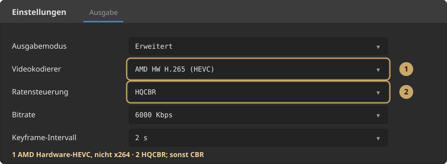
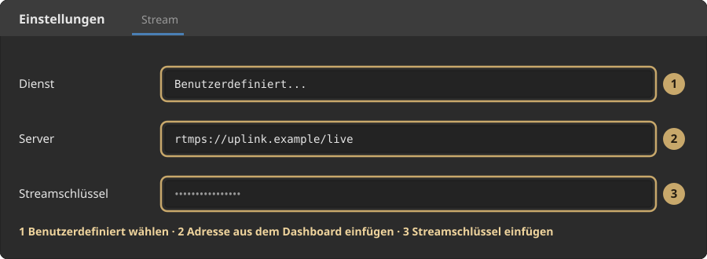
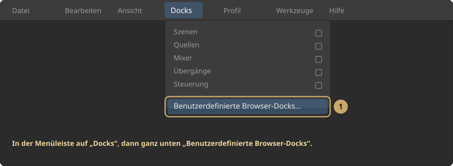
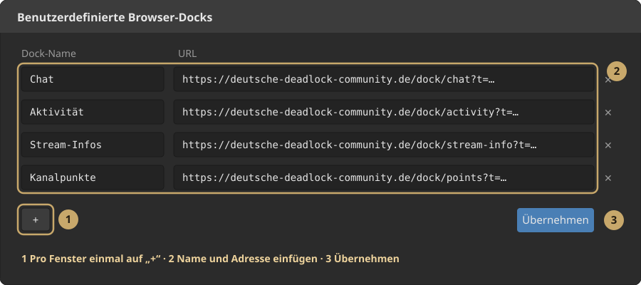
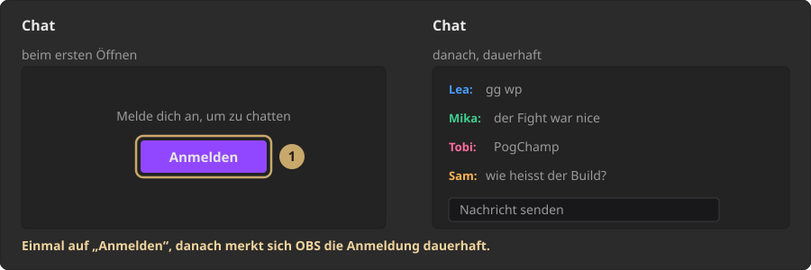

OBS einrichten
Du stellst den Weg zu uns ein. CBR und Keyframe für Twitch musst du nicht nachbauen, und welche Auflösung rausgeht, wählst du im Dashboard. Ziel: viel Bild bei wenig Upload, wenig Last neben dem Spiel.
1. Ausgabe
Einstellungen → Ausgabe → Ausgabemodus Erweitert → Reiter Stream.
Videokodierer
Nimm den ersten Eintrag, den OBS bei dir anbietet:
NVIDIA NVENC HEVCoderAMD HW H.265 (HEVC)oderQuickSync HEVC- Wenn HEVC fehlt oder das Spiel danach ruckelt:
NVIDIA NVENC H.264/AMD HW H.264/QuickSync H.264 x264ohne Hardware-Encoder. Das kostet Kerne und mehr Upload.

Weglassen: x265, SVT-AV1, AOM AV1 (zu schwer neben dem Spiel) und Hardware-AV1 (unser Eingang erwartet HEVC oder H.264).
Qualitätsregulierung
CBR, VBR, ABR und CQP/CRF steuern, wie viele Bits eine Szene bekommt. Nicht den Codec.
| Modus | Was er macht | In Deadlock | Zu uns |
|---|---|---|---|
| CBR | Jede Sekunde gleich viele Bits, Lobby wie Fight. | Verschenkt Upload in ruhigen Szenen. Fight wird davon nicht schöner. | Unnötig. CBR brauchen Twitch und Kick von uns, nicht von dir. |
| VBR | Zielbitrate plus Maximalbitrate. Ruhig spart er, im Fight gibt er mehr, begrenzt durch das Maximum. | Planbar. Bleibt in deiner Leitung. | Empfehlung. |
| CQP (bei x264: CRF) | Du setzt eine Qualitätszahl. Der Encoder nimmt so viele Bits, wie die Szene braucht. | Lobby oft 2 bis 3 Mbit, Teamfight plötzlich 10 bis 15 Mbit. | Beste Qualität pro Bit, wenn deine Leitung die Spitze trägt. |
| ABR | Hält im Schnitt eine Bitrate, oft ohne hartes Maximum. Vor allem bei x264 sichtbar. | Kann über deine Leitung schießen, ohne so klar zu sein wie CQP. | Weglassen. Schlechter Kompromiss. |
- VBR: du begrenzst die Leitung, der Encoder verteilt innerhalb der Grenze.
- CQP/CRF: du bestellst Qualität, die Bitrate folgt der Szene.
- ABR: ungefähr VBR, aber ohne zuverlässigen Deckel.
- CBR: Deckel und Boden sind gleich. Für den direkten Twitch-Weg Pflicht, für uns Verschwendung.
Welche Zahl
Standard bei knapper Leitung: VBR
- Zielbitrate: 6000 Kbps
- Maximalbitrate: 8000 Kbps, oder 80 Prozent vom gemessenen Upload, falls das niedriger ist
- Unter 5 Mbit realem Upload: Ziel 4000, Maximum 5000, und 30 fps
CQP/CRF, wenn der Upload stabil über 10 Mbit liegt und du das Maximum willst:
- AMD / Intel: CQP 20 (18 schärfer und schwerer, 22 sparsamer)
- NVIDIA: CQP 18 bis 20
- x264-Notnagel: CRF 20
Danach eine echte Runde. Steigt die Bitrate in OBS dauerhaft über deine Leitung, zurück zu VBR.
Keyframeintervall: 2 s. Nicht 0 (automatisch).
Ausgabe umskalieren: Deaktiviert, solange die Basis 1080 oder 1440 ist. Runterskalieren in OBS nimmt uns Detail weg.
x264-Notnagel: Preset veryfast, Profil high, Tune zerolatency. Tune film ist für Aufnahme, nicht für Live.
Audio
- Kodierer: FFmpeg AAC
- Spur 1 an
- 160 oder 192 Kbps, Stereo
- Twitch-VOD-Spur kannst du aus lassen. Die Plattform-Spuren bauen wir.
2. Video (Auflösung und FPS)
Einstellungen → Video.
| Upload (gemessen) | Basis und Ausgabe | FPS | Kodierung |
|---|---|---|---|
| 3 bis 5 Mbit | 1920×1080 | 30 | HEVC, VBR 4000 / max 5000 |
| 5 bis 8 Mbit | 1920×1080 | 60 | HEVC, VBR 6000 / max 8000 |
| ab 8 Mbit, GPU hält 1440 ohne Drop | 2560×1440 | 60 | HEVC, VBR 6000 / max 8000 |
| GPU droppt oder Spiel ruckelt | eine Stufe kleiner oder 30 fps | gleicher Encoder, nicht auf Software wechseln |
1440p an uns zu schicken lohnt sich zweifach: entweder rechnen wir daraus 1080p und behalten dabei Schärfe, oder wir senden die vollen 2K weiter, wenn du diese Stufe im Dashboard wählst. Es lohnt nicht, wenn der Encoder Frames schluckt. In OBS unten: Skipped frames bleibt bei 0.
3. Ziel: unser Server
Einstellungen → Stream.
- Dienst: Benutzerdefiniert
- Server: die SRT-Adresse aus dem Dashboard (kopieren, nicht abtippen)
- Stream-Schlüssel: bleibt leer. Dein Schlüssel steckt bei SRT bereits als
streamidin der Adresse.

Ins Dashboard kommt nur die SRT-Adresse, und über die läuft dein Stream. SRT verträgt Wackelnetz besser, und im Dashboard steht genau eine Adresse: die SRT-Adresse. Kann dein Programm kein SRT, nimm OBS.
„Stream starten“ geht danach an uns. Die Plattformen starten wir. Titel und Kategorie stellst du weiter in den Dashboards der Plattformen, solange die Sync dafür noch nicht liegt.
4. Chat und die OBS-Fenster zurückholen
Sobald der Dienst auf Benutzerdefiniert steht, verschwinden in OBS die Twitch-Fenster: Chat, Aktivitätsfeed und Stream-Informationen. Dein Chat läuft trotzdem normal weiter. Chat und Video sind bei Twitch getrennte Wege, wir fassen nur das Video an. Weg sind nur die Fenster in OBS, weil OBS die ausschließlich bei verbundenem Twitch-Konto selbst anlegt.
Es sind dieselben Seiten wie in den eingebauten Fenstern. Du legst sie einmal von Hand an, dann bleiben sie.


| Fenster | Adresse |
|---|---|
| Chat | https://www.twitch.tv/popout/DEINKANAL/chat?darkpopout |
| Aktivitätsfeed | https://dashboard.twitch.tv/popout/stream-manager/activity-feed |
| Stream-Informationen | https://dashboard.twitch.tv/popout/stream-manager/edit-stream-info |
| Kanalpunkte | https://dashboard.twitch.tv/popout/stream-manager/community-points |
Nur beim Chat steht dein Kanalname in der Adresse. Bei den drei anderen schickt dich Twitch automatisch auf deinen eigenen Kanal, sobald du angemeldet bist. Im Dashboard stehen alle vier fertig zum Kopieren, dann musst du gar nichts ersetzen.
Schritt 3: Fenster dahin ziehen, wo du sie haben willst, dann unter Docks das Layout speichern. Das übersteht jeden OBS-Neustart, du machst das genau einmal.
„Aber ich bin doch gar nicht angemeldet“
Das ist die häufigste Frage an dieser Stelle, und dahinter stecken zwei verschiedene Anmeldungen, die leicht durcheinandergehen:
- Konto verbinden in den Stream-Einstellungen. Damit holt sich OBS deinen Twitch-Streamschlüssel. Die brauchst du bei uns nicht, deshalb ist sie weg.
- Anmeldung im Fenster. In OBS steckt ein vollständiger Browser. Der hat eigene Cookies, genau wie Chrome oder Firefox. Damit meldest du dich bei Twitch an, und darüber laufen Chat, Aktivität und Stream-Info.
Beim ersten Öffnen zeigt das Fenster also einen Anmelden-Knopf. Ein Klick, einmal einloggen, fertig. OBS legt das Cookie ab und findet es beim nächsten Start wieder.

Wichtig: die eingebauten Twitch-Fenster machen es genauso. Auch die laden dieselben Seiten in denselben Browser und brauchen dasselbe Cookie. Du sparst dir mit ihnen nur das Anlegen, nicht die Anmeldung.
Und nein, wir leiten das nicht über unseren Server um. Dafür müssten wir deine Twitch-Sitzung durch unsere Hand laufen lassen, und wer bei uns einbräche, hätte damit Zugriff auf deinen Kanal. Deine Anmeldung bleibt zwischen dir und Twitch. Wir sehen davon nichts.
Was im eigenen Chat-Fenster fehlt, sind BetterTTV- und FrankerFaceZ-Emotes: die spritzt OBS nur in seine eingebauten Fenster ein.
Stream starten schickt danach an uns, nicht an Twitch. Twitch geht live, sobald wir dorthin senden. Enhanced Broadcasting und Mehrspur-Video bietet OBS nur mit verbundenem Twitch-Konto an, über uns läuft das nicht. Dafür kommst du mit einem Upload gleichzeitig auf mehrere Plattformen.
5. Check vor dem Abend
- Hardware-HEVC, nicht x264.
- VBR mit Ziel und Maximum, nicht CBR, nicht ABR.
- Keyframe 2 s.
- Eine Testminute: Skipped frames 0, Bitrate unter dem Maximum, kein Stottern im Spiel.
- Bild bricht bei Fights: Maximum 1000 Kbps runter oder 30 fps. Encoder nicht wechseln.
Streamlabs: viele Versionen können kein SRT. Kannst du dort die SRT-Adresse nicht eintragen, nimm OBS. Auch HEVC ist aus Streamlabs oft nicht nutzbar; dann ist der Bandbreitenvorteil weg.